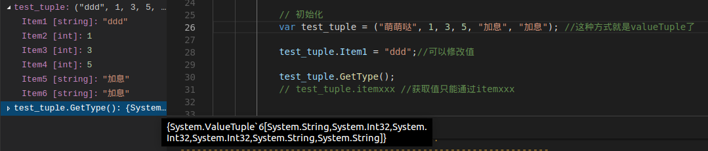
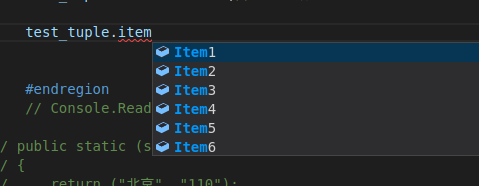

Code：https://github.com/lotapp/BaseCode
多图旧版：https://www.cnblogs.com/dunitian/p/9156097.html
在线预览：http://github.lesschina.com/python/base/pop/3.list_tuple_dict_set.html
今天说说List、Tuple、Dict、Set。POP部分还有一些如Func、IO（也可以放OOP部分说）然后就说说面向对象吧。
先吐槽一下：Python面向对象真心需要规范，不然太容易走火入魔了 -_-!!! 汗，下次再说。。。
info_list=[] #空列表
infos_list=["C#","JavaScript"]
遍历和之前一样，for 或者 while 都可以
for扩展：https://www.cnblogs.com/dunitian/p/9103673.html#forelse
# 定义一个列表，列表虽然可以存不同类型，一般我们把相同类型的值存列表里面
infos_list=["C#","JavaScript"]#定一个空列表 list=[]
# for遍历
for item in infos_list:
print(item)
# while遍历
i=0
while i<len(infos_list):
print(infos_list[i])
i+=1
末尾追加 infos_list.append("Java")
# 添加~末尾追加
infos_list.append("Java")
print(infos_list)
指定位置插入 infos_list.insert(0,"Python")
插入列表 infos_list.insert(0,temp_list)
Python在指定位置插入列表是真的插入一个列表进去，C#是把里面的元素挨个插入进去
看后面的列表嵌套，是通过下标方式获取，eg: infos_list[0][1]
# 添加～指定位置插入
infos_list.insert(0,"Python")
print(infos_list)
# 列表嵌套（后面会有扩展）
temp_list=["test1","test2"]
infos_list.insert(0,temp_list)
print(infos_list)
infos_list #查看下现在列表是什么
如果你想像C#那样把里面的元素挨个插入进去，可以用extend()
添加一个列表 infos_list.extend(infos_list2)
# 添加一个列表
infos_list2=["张三",21]#python里面的列表类似于List<object>
infos_list.extend(infos_list2)
print(infos_list)
#可以查看extend方法描述
help(infos_list.extend)
# 删除
# pop()删除最后一个元素，返回删掉的元素
infos_list.pop()
infos_list #查看一下列表
# 删除
# pop(index) 删除指定下标元素，返回删掉的元素
infos_list.pop(0)
infos_list #查看一下列表
# 索引不存在就报错
infos_list.pop(10)
infos_list.remove("张三") # remove("")删除指定元素，不存在就报错
del infos_list[1] # 删除指定下标元素，不存在就报错
del infos_list # 删除集合（集合再访问就不存在了）不同于C#给集合赋null
关于del的删除后面还会说，这个和linux里面的ln引用删除类似
# remove("")删除指定元素
infos_list.remove("张三") #没有返回值
print(infos_list)
infos_list.remove("dnt") # 不存在就报错
# del xxx[index] 删除指定下标元素
del infos_list[1] #没有返回值
print(infos_list)
del infos_list[10] #不存在就报错
del infos_list # 删除集合（集合再访问就不存在了）
infos_list # 集合再访问就不存在了
Python修改：（只能通过索引修改）
infos_list2[1]="PHP" # 只有下标修改一种方式，不存在则异常
想按值修改需要先查下标再修改 eg:
infos_list2.index("张三")
infos_list2[0]="GO"
infos_list2.index("dnt") # 不存在则异常
# 修改 xxx[index]=xx
# 注意：一般不推荐在for循环里面修改
infos_list2 #查看list2列表
infos_list2[1]="PHP" #只有下标修改一种方式
print(infos_list2)
infos_list2[3]="GO" #不存在则异常
# 想按值修改需要先查下标再修改
infos_list2.index("张三")
infos_list2[0]="GO"
print(infos_list2)
infos_list2.index("dnt")#不存在则异常
# 知识面拓展： https://www.zhihu.com/question/49098374
# 为什么python中不建议在for循环中修改列表？
# 由于在遍历的过程中，删除了其中一个元素，导致后面的元素整体前移，导致有个元素成了漏网之鱼。
# 同样的，在遍历过程中，使用插入操作，也会导致类似的错误。这也就是问题里说的无法“跟踪”元素。
# 如果使用while，则可以在面对这样情况的时候灵活应对。
in, not in, index, count
# 查询 in, not in, index, count
names_list=["张三","李四","王二麻子"]
# 张三在列表中执行操作
if "张三" in names_list:
names_list.remove("张三")
print(names_list)
# 查看"大舅子"不在列表中执行操作
if "大舅子" not in names_list:
names_list.append("大舅子")
print(names_list)
# 查询王二麻子的索引
print(names_list.index("王二麻子"))
# 统计
print(names_list.count("大舅子"))
print(names_list.count("逆天"))
# 排序专用
num_list=[1,3,5,88,7]
# 倒序 reverse 逆置
num_list.reverse()
print(num_list)
# 从小到大排序
num_list.sort()
print(num_list)
# 从大到小
num_list.sort(reverse=True)
print(num_list)
列表的切片操作很有用，主要跟数据相关，实际应用中和dict（后面会讲）联合使用
python切片语法：[start_index:end_index:step] （end_index取不到）
先说说 range
# range扩展～创建一个整数列表
# range(5)生成的序列是从0开始小于5的整数～[0,5)
range_list=list(range(5))
print(range_list)
# range(1,5)生成的序列是从1开始小于5的整数～[1,5)
range_list=list(range(1,5))
print(range_list)
# 列表的切片操作很有用，主要跟数据相关，实际应用中和dict（后面会讲）联合使用
# python切片语法：[start_index:end_index:step] （end_index取不到）
top100=list(range(1,101)) #[1,101) => 1~100
print(top100)
# 取前10个元素
top100[:10] #等价于：top100[0:10]
# 取最后10个元素
top100[-10:]
# 前11~20（eg：第二页）
top100[10:20]
# 取80~90（eg:倒数第二页）
top100[-20:-10]
# 前20个数，每两个取一个（eg:隔行换样式）
top100[:20:2]
# 所有数每10个取一个（eg:test的时候十里挑一）
top100[::10]
# #列表嵌套(列表也是可以嵌套的)
num_list2=[33,44,22]
num_list.append(num_list2)
print(num_list)
# 输出
print(num_list[5])
print(num_list[5][1]) #嵌套列表获取值的方式
# 引入Null==>None
a=[1,2,3,4]
b=[5,6]
a=a.append(b)#a.append(b)没有返回值
print(a)#None
补充概念，str 和 tuple 也可以用切片操作哦～
str上次说了，这次说下Tuple（后面会继续说Tuple，先了解下吧）
# 取前两个 返回元组
(1,2,3,4,5)[:2]
i=1
my_list=[]
while(i<11):
my_list.append(i)
i+=1
my_list
有了列表生成式就方便了 list(range(1, 11))（之前说列表切片的时候稍微引入了一下range）
另一种写法：[x for x in range(1,11)] 来看看案例：
list(range(1, 11))
[x for x in range(1,11)]
可能有人会问，第一种写法不是挺好的嘛，为什么要用第二种复杂写法？
看看下面案例你就知道它的强大了（能简写就简单）
现在有了range生成就更方便了，可如果我们需要 1~10的平方列表呢？`[1^2,2^2,....10^2]'
my_list=[]
for i in range(1,11):
my_list.append(i*i)
i+=1
print(my_list)
但是循环太繁琐，而列表生成式则可以用一行语句代替循环生成上面的list
[x * x for x in range(1, 11)] 你可以这样理解==>就是我们平时的for循环嘛，前面的参数是返回值罢了
[x*x for x in range(1,11)]
# 把一个list中所有的字符串变成小写
my_list = ['Hello', 'World', 'I', 'Love', 'You']
[x.lower() for x in my_list]
列表生成式的强大仅限于此嘛？No～
for循环后面还可以加上if判断 [x for x in range(1, 11) if x % 2 == 0]
多重for循环嵌套 [x + y for x in 'ABC' for y in 'AB']
# 1~10之间的偶数
[x for x in range(1, 11) if x % 2 == 0]
# 数学里面的全排列
[x + y for x in 'ABC' for y in 'AB']
其实你可以把他看成
list1=[]
for x in range(1,5):
for y in range(1,4):
list1.append((x,y))
# 数学里面的坐标轴（元组马上就讲了，你可以看看）
[(x,y) for x in range(1,5) for y in range(1,4)]
# (x,y,z)
[(x,y,z) for x in range(1,5) for y in range(1,4) for z in range(1,3)]
%%script csharp
//# 定义一个列表
// # infos_list=["C#","JavaScript"]#[]
var infos_list = new List<object>() { "C#", "JavaScript" };
// // # ###########################################################
// // # # 遍历 for while
// // # for item in infos_list:
// // # print(item)
foreach (var item in infos_list)
{
System.Console.WriteLine(item);
}
for (int i = 0; i < infos_list.Count; i++)
{
System.Console.WriteLine(infos_list[i]);
}
// # i=0
// # while i<len(infos_list):
// # print(infos_list[i])
// # i+=1
int j=0;
while(j<infos_list.Count){
Console.WriteLine(infos_list[j++]);
}
Add，AddRange，Insert，InsertRange (和Python插入列表有些区别)
为了后面演示的方便，我这边定义一个自定义输出：
private static void DivPrintList(List<object> list, string say = "")
{
Console.WriteLine($"\n{say}");
foreach (var item in list)
{
System.Console.Write($"{item} ");
}
}
添加系列Code：
var infos_list2 = new List<object>() { "张三", 21 };
// # # 增加
// # # 末尾追加
// # infos_list.append("Java")
infos_list.Add("Java");
DivPrintList(infos_list);
// # # 指定位置插入
// # infos_list.insert(0,"Python")
// # print(infos_list)
infos_list.Insert(0,"Python");
DivPrintList(infos_list);
// # # 添加一个列表
// # infos_list2=["张三",21]#python里面的列表类似于List<object>
// # infos_list.extend(infos_list2)
// # print(infos_list)
infos_list.AddRange(infos_list2);
DivPrintList(infos_list);
/*C#有insertRange方法 */
DivPrintList(infos_list2,"List2原来的列表：");
infos_list2.InsertRange(0,infos_list);
DivPrintList(infos_list2,"List2变化后列表：");
结果：
# 末尾追加
C# JavaScript Java
# 指定位置插入
Python C# JavaScript Java
# 添加一个列表
Python C# JavaScript Java 张三 21
# insertRange方法
List2原来的列表：
张三 21
List2变化后列表：
Python C# JavaScript Java 张三 21 张三 21移除指定索引：infos_list.RemoveAt(1);
移除指定值： infos_list.Remove(item);
清空列表： infos_list.Clear();
infos_list.RemoveAt(1);
// infos_list.RemoveAt(10);//不存在则报错
// infos_list.RemoveRange(0,1); //可以移除多个
DivPrintList(infos_list);
infos_list.Remove("我家在东北吗？"); //移除指定item，不存在不会报错
DivPrintList(infos_list,"清空前：");
infos_list.Clear();//清空列表
DivPrintList(infos_list,"清空后：");
输出：
Python JavaScript Java 张三 21
清空前：
Python JavaScript Java 张三 21
清空后：基本上和Python一样
DivPrintList(infos_list2);
infos_list2[1] = "PHP";
// infos_list2[3]="GO"; //不存在则异常
DivPrintList(infos_list2);
// # # 想按值修改需要先查下标再修改
// # infos_list2.index("张三")
// # infos_list2[0]="GO"
// # print(infos_list2)
// # # infos_list2.index("dnt")#不存在则异常
int index = infos_list2.IndexOf("张三");
infos_list2[index] = "GO";
DivPrintList(infos_list2);
infos_list2.IndexOf("dnt");//不存在返回-1
输出：
Python C# JavaScript Java 张三 21 张三 21
Python PHP JavaScript Java 张三 21 张三 21
Python PHP JavaScript Java GO 21 张三 21IndexOf，Count 这两个讲过了
查找用Contains，其他的用法你可以先看看
// # 查询 in, not in, index, count
// # names_list=["张三","李四","王二麻子"]
var names_list=new List<string>(){"张三","李四","王二麻子"};
// Console.WriteLine(names_list.Find(i=>i=="张三"));
// Console.WriteLine(names_list.FirstOrDefault(i=>i=="张三"));
Console.WriteLine(names_list.Exists(i=>i=="张三"));
Console.WriteLine(names_list.Contains("张三"));结果：
True
True// # # 排序(sort, reverse 逆置)
// # num_list=[1,3,5,88,7]
var num_list = new List<object>() { 1, 3, 5, 88, 7 };
// # #倒序
// # num_list.reverse()
// # print(num_list)
num_list.Reverse();
DivPrintList(num_list);
// # # 从小到大排序
// # num_list.sort()
// # print(num_list)
num_list.Sort();
DivPrintList(num_list);
// # # 从大到小
// # num_list.sort(reverse=True)
// # print(num_list)
num_list.Sort();
num_list.Reverse();
DivPrintList(num_list);
输出：
7 88 5 3 1
1 3 5 7 88
88 7 5 3 1列表嵌套不能像python那样 下标操作，你可以继续循环遍历，或者可以定义多维数组来支持 num_list2[i][j]
定义：var num_list2 = new List<object>() { 33, 44, 22,new List<object>(){11,55,77} };
关于多维数组的案例可以看我以前讲解的Code：https://github.com/dunitian/LoTCodeBase/tree/master/NetCode/1.面向过程/02.数组系列
# 只能查询，其他操作和列表差不多（不可变）(最后面有可变扩展)
test_tuple=("萌萌哒",1,3,5,"加息","加息")
# 定义的扩展：
test_tuple1=(1,) #(1)就不是元祖了
test_tuple2=(2)
print(type(test_tuple1))
print(type(test_tuple2))
# count index
print(test_tuple.count("加息"))
print(test_tuple.index("萌萌哒"))#没有find方法
# 从特定位置查找，注意是左闭右开区间==>[1,4)
print(test_tuple.index("加息", 1, 4))#查不到报错：ValueError: tuple.index(x): x not in tuple
#下标取
print(test_tuple[0])
print(test_tuple[-1])
# 遍历方式1
for item in test_tuple:
print(item)
# 遍历方式2
i=0
while i<len(test_tuple):
print(test_tuple[i])
i+=1
# 后面讲字典遍历的时候会再提一下的
a=(1,2)
b=a#把a的引用给b
#a里面两个值,直接给左边两个变量赋值了（有点像拆包了）
c,d=a #不是把a分别赋值给c和d，等价于：c=a[0] d=a[1]
print(a)
print(b)
print(c)
print(d)
# 交换两数～元组的方式
a=1
b=2
a,b=b,a # 写全：(a,b)=(b,a)
print(a)
print(b)
多维元组
some_tuples=[(2,"萌萌哒"),(4,3)]
some_tuples[0]
some_tuples[0][1]
# 多维元组
some_tuples=[(2,"萌萌哒"),(4,3)]
some_tuples[0]
some_tuples[0][1]
# 扩展：可变的元组（元组在定义的时候就不能变了，但是可以通过类似这种方式来改变）
value_tuple = ("a", "1", ["mmd"],{"name":"dnt"})
value_tuple
value_tuple[2].append("test")
print(value_tuple)
value_tuple[3]["wechat"]="dotnetcrazy"
print(value_tuple)
逆天ValueTuple用的比较多，下面案例就是用的这个
元组系:https://msdn.microsoft.com/zh-cn/library/system.tuple.aspx
值元组:https://msdn.microsoft.com/zh-cn/library/system.valuetuple.aspx
C#中元组主要是方便程序员,不用自然可以。比如:当你返回多个值是否还用ref out 或者返回一个list之类的？
这些都需要先定义,比较麻烦.元祖在这些场景用的比较多。
先说说基本使用：
初始化：var test_tuple = ("萌萌哒", 1, 3, 5, "加息", "加息");
这种方式就是valueTuple了（看vscode监视信息）

// 初始化
var test_tuple = ("萌萌哒", 1, 3, 5, "加息", "加息"); //这种方式就是valueTuple了
test_tuple.Item1 = "ddd";//可以修改值
test_tuple.GetType();
需要说下的是，取值只能通过itemxxx来取了，然后就是valueTuple的值是可以修改的

下面直接进入应用场景：
var result = GetCityAndTel(); //支持async/await模式
var city = result.city;
var tel = result.tel;
// 拆包方式:
var (city1, tel1) = GetCityAndTel();
贴一下方法：
// public static (string city, string tel) GetCityAndTel()
// {
// return ("北京", "110");
// }
// 简化写法
public static (string city, string tel) GetCityAndTel() => ("北京", "110");
再说一下，C#元组的方式交换两数：
int x = 1, y = 2;
(x, y) = (y, x);
Console.WriteLine("x： " + x + " y： " + x);
PS：附上Python进行对比记忆：
a=1
b=2
a,b=b,a # 写全：(a,b)=(b,a)
就说到这了，简单了解即可
infos_dict={"name":"dnt","web":"dkill.net"} #空字典定义 dict={}
# 遍历keys
for item in infos_dict.keys():
print(item)
#注意，如果你直接对infos遍历，其实只是遍历keys
for item in infos_dict:
print(item)
# 遍历values
for item in infos_dict.values():
print(item)
# 遍历键值对
for item in infos_dict.items():
print("Key:%s,Value:%s"%(item[0],item[1]))
# 每一次相当于取一个元组，那可以用之前讲的例子来简化了：c,d=a #等价于：c=a[0] d=a[1]
for k,v in infos_dict.items():
print("Key:%s,Value:%s"%(k,v))
# 活学活用，用列表生成式列表
[k + ':' + v for k,v in infos_dict.items()]
增加、修改：infos_dict["wechat"]="dotnetcrazy" # 有就修改，没就添加
# 增加 修改 (有就修改，没就添加)
# 添加
infos_dict["wechat"]="lll"
print(infos_dict)
# 修改
infos_dict["wechat"]="dotnetcrazy"
print(infos_dict)
补充：dict内部存放的顺序和key放入的顺序是没有关系的
dict的key必须是 不可变对象，dict根据key进行hash算法,来计算value的存储位置
如果每次计算相同的key得出的结果不同，那dict内部就完全混乱了
测试结果：元组是可以作为Key的
# dict的key必须是不可变对象的验证案例
key1=(1,2,3)
key2=[1,2,3]
key3={"1":"2"}
dic={}
# 元组是不可变类型，可以当key
dic[key1]="mmd"
# dict根据key进行hash算法,来计算value的存储位置
# 如果每次计算相同的key得出的结果不同，那dict内部就完全混乱了
dic[key2]="dnt" # unhashable
# 字典也不行
dic[key3]="test"
删除系列：
清空字典内容 infos_dict.clear()
删除指定内容 del infos_dict["name"]（没有返回值） or pop(key)（返回删除Key的值） 不存在都会报错
删除字典 del infos_dict
infos_dict #查看列表
# 要删除一个key，用pop(key)方法，对应的value也会从dict中删除
infos_dict.pop("wechat") #返回key对应的值
infos_dict.pop("wechat") #key不存在，则报错
del infos_dict["name"] #没有返回值
print(infos_dict)
del infos_dict["name"] #不存在就报错
#清空字典内容
infos_dict.clear()
print(infos_dict)
# 删除字典
del infos_dict
查询系列：推荐：infos_dict.get("mmd") # 查不到不会异常
infos_dict={"name":"dnt","web":"dkill.net"} #刚才被删掉了，我们重新定义一下
infos_dict["name"]
infos_dict["mmd"] #查不到就异常
# 要避免key不存在的错误，有两种办法
# 一是通过in判断key是否存在：
print("mmd" in infos_dict)
# 二是通过dict提供的get()方法
infos_dict.get("name")
print(infos_dict.get("mmd"))#如果key不存在，返回None
print(infos_dict.get("mmd",-1))#也可以返回自己指定的value
# 查看帮助
# help(infos_dict)
len(infos_dict) #有几对key,value
# infos_dict.has_key("name") #这个是python2里面的
//添加
infos_dict.Add("wechat", "lll");
infos_dict["wechat1"] = "lll";
//修改
infos_dict["wechat"] = "dotnetcrazy";
删除系列：
// 删除元素
// # del infos_dict["name"]
// # del infos_dict["dog"] #不存在就报错
// # print(infos_dict)
infos_dict.Remove("name");
infos_dict.Remove("dog");//不存在不报错
// 清空列表内容
// # infos_dict.clear()
// # print(infos_dict)
infos_dict.Clear();
查询系列：
// infos_dict["name"]
// infos_dict["mmd"] #查不到就异常
// infos_dict.get("name")
// infos_dict.get("mmd")#查不到不会异常
Console.WriteLine(infos_dict["name"]);
// Console.WriteLine(infos_dict["mmd"]); //#查不到就异常
// 先看看有没有 ContainsKey(key),看值就 ContainsValue(value)
if (infos_dict.ContainsKey("mmd")) Console.WriteLine(infos_dict["mmd"]);
// len(infos_dict) #有几对key,value
Console.WriteLine(infos_dict.Count);
# 先看个帮助文档
help(set)
# 定义一个set集合
# set(iterable) -> new set object #列表就比较合适了
my_set=set([1,2,1,"mmd"])
# 数学里面也是用大括号表示的
my_set # 重复元素在自动被过滤
my_set=set((1,2,3,3,2))
my_set
# 只会存不重复的key值
my_set=set({"name":"mmd","name":"ddd","age":22})
my_set
# 遍历 my_set
for item in my_set:
print(item)
# list去重案例：
my_list=[1,111,22,33,1,1,1]
my_list=list(set(my_list))
print(my_list)
# 添加元素
my_set.add("add") #没有返回值
print(my_set)
# 添加一些元素
my_set.update([1,4,3])
print(my_set)
my_set.update((6,7,9))
print(my_set)
# 字符串被拆成字符存储
my_set.update("Love")
print(my_set)
################### 删除系列 ###########################
# 删除元素
my_set.remove("mmd") # 不存在则报错
print(my_set)
# 删除 name
my_set.remove("name")
my_set
# pop删除
# pop一般不用，说法不一，有些说删除第一个有些说随机
# 了解就好了，不用管pop（全数字的时候，我测试的确删的是第一个）
my_set.pop()
my_set
# 清空
my_set.clear()
my_set
# 有就删除，没有也不会报错
my_set.discard("dnt") # 没有返回值
#利用运算符+set 实现数学方面的扩展
set1=set([1,2,5])
set2=set([2,4,6])
print(set1)
print(set2)
# 交集 A∩B={x|x∈A,且x∈B}
set1 & set2
# 并集 A∪B={x|x∈A,或x∈B}
set1 | set2
# 差集 A-B={x∣x∈A,且x∉B}
set1 - set2
# 对称差集（互相没有的取出来）
set1^set2
# Set方法实现交集
set1.intersection(set2)
# Set方法去重后的并集
set1.union(set2)
# 差集（把set1里面有的而set2里面没有的取出）
set1.difference(set2)
# 对称差集（互相没有的取出来）
set1.symmetric_difference(set2)
# 再定义两个Set用来进行下面调试
set3=set([1,2])
set4=set([7,8,9])
# 子集（判断set3是否是set1的子集）
set3.issubset(set1)
# 父集（set1是否是set3的父集）
set1.issuperset(set3)
# 判断两个集合是否没有交集
set1.isdisjoint(set4)
# 反过来也一样
set4.isdisjoint(set1)
################### 补集的扩展 ###########################
# 补集
set3=set(list(range(10)))
print(set3)
# 【大前提】set2是set3的一个子集（set3包含于set2）
set2.issubset(set3)
# 这时候求差集，就等于求补集
set3 - set2
# 其他内容可以直接查看help
test_str="www.baidu.com"
test_list=[1,"d",5]
test_list1=[2,4,"n","t",3]
test_dict={"name":"dnt","wechat":"xxx"}
# + 合并 (不支持字典)
print(test_str+test_str)
print(test_list+test_list1)
# * 复制 (不支持字典)
print(test_str*2)
print(test_list*2)
# in 是否存在（字典是查key）
print("d" in test_str) #True
print("d" in test_list) #True
print("d" in test_dict) #False
print("name" in test_dict) #True
# not in 是否不存在（字典是查key）
print("z" not in test_str) #True
print("z" not in test_list) #True
print("z" not in test_dict) #True
print("name" not in test_dict) #False
# len(item) 计算容器中元素个数
print(len(test_str))
print(len(test_list))
print(len(test_dict))
# max(item) 返回容器中元素最大值
max(test_str)
# 这个注意一种情况（当然了，你按照之前说的规范，list里面放同一种类型就不会出错了）
max(test_list) #TypeError: '>' not supported between instances of 'str' and 'int'
test_list=[1,3,5,7,9,2]
print(max(test_list))
print(max(test_dict)) #比较key
# min(item) 返回容器中元素最小值
print(min(test_str))
print(min(test_list))
print(min(test_dict))
# del(item) 删除变量
# del() or del xxx
# 可以忽略 cmp(item1, item2) 比较两个值
# Python2里面有 cmp(1,2) ==> -1
# cmp在比较字典数据时，先比较键，再比较值